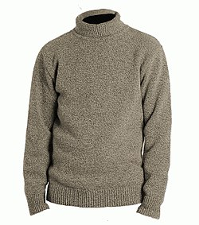
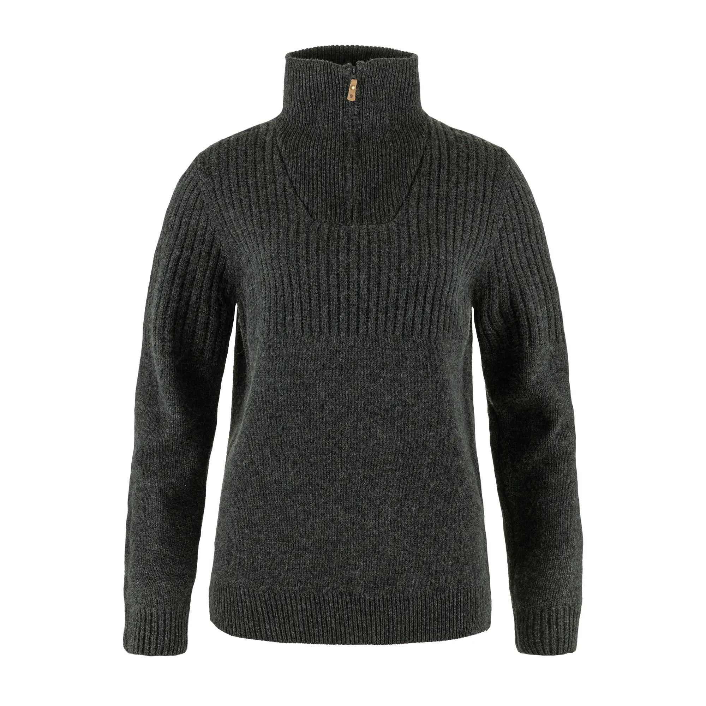
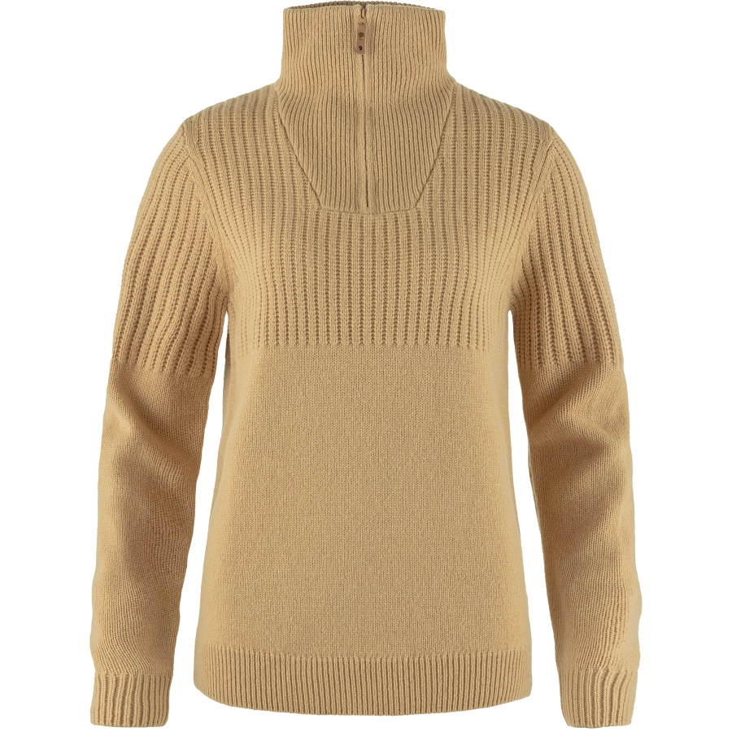
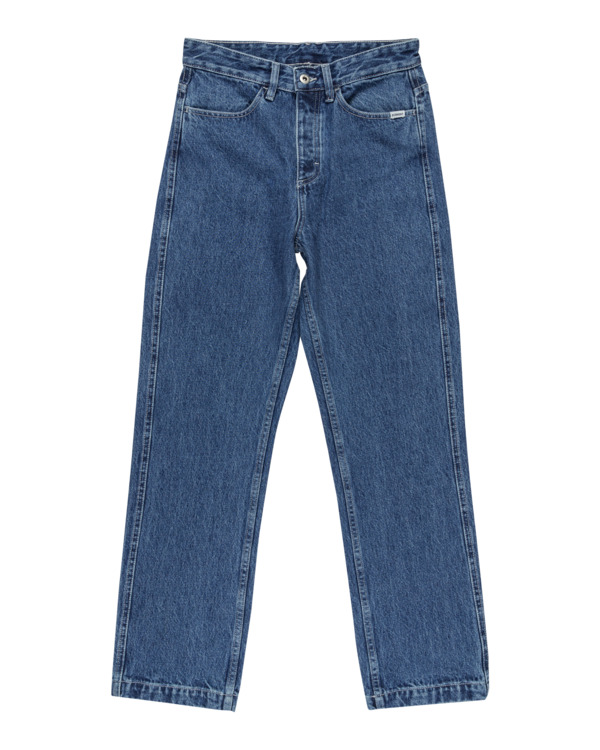
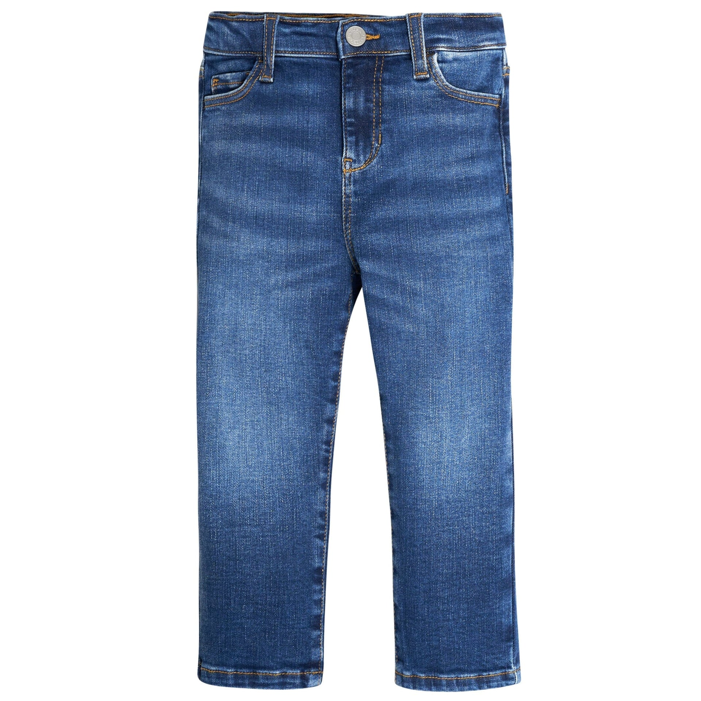
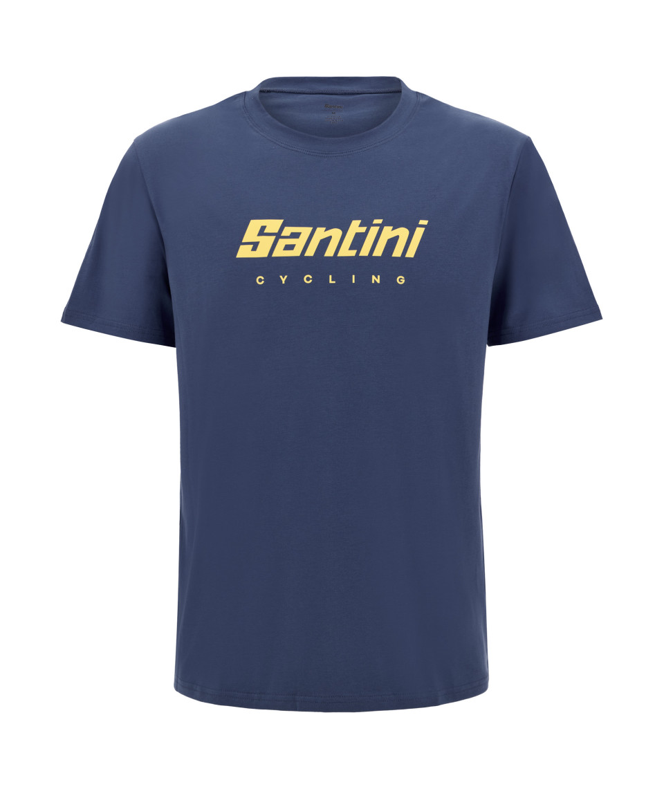
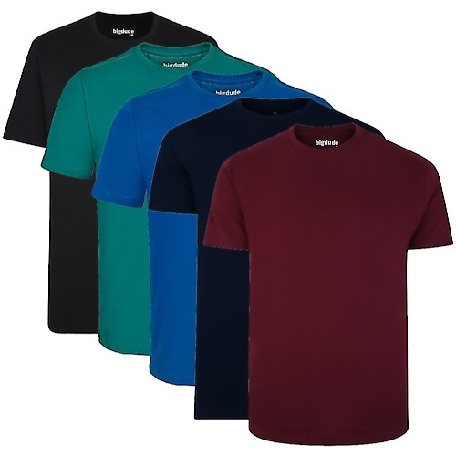
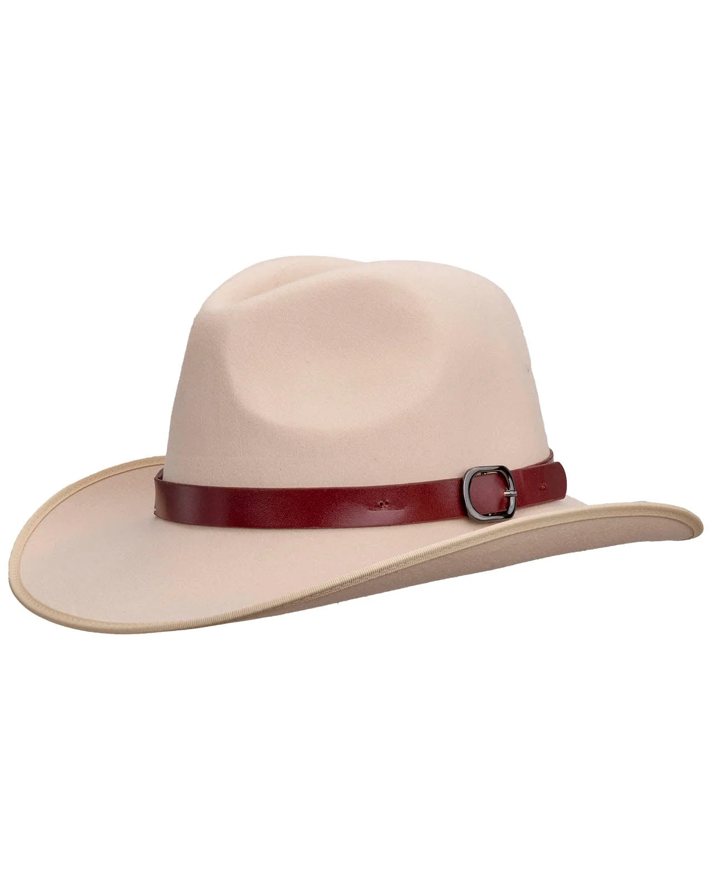
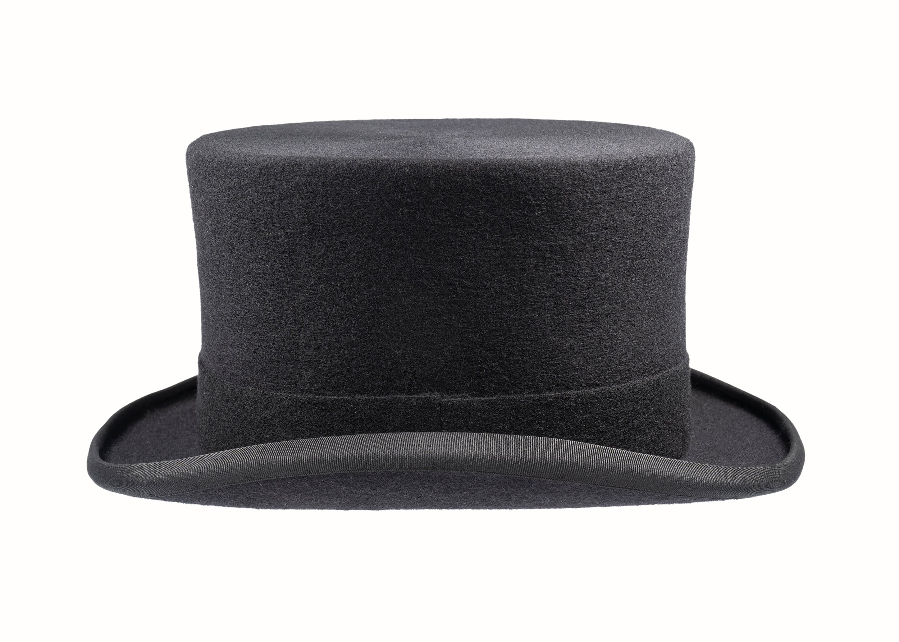
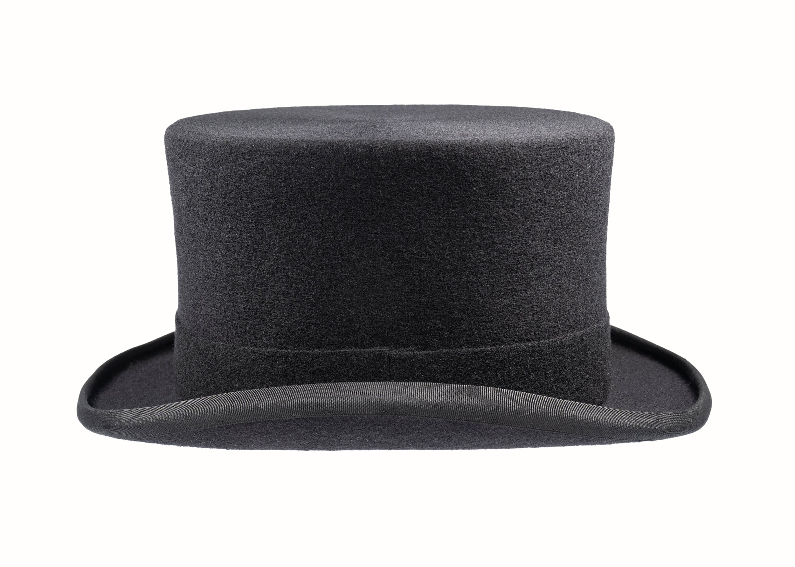

Sweater
Costs: 123$
  
A sweater is a knitted garment, usually with long sleeves, worn on the upper body to provide warmth. It can be made from wool, cotton, or synthetic fibers, and comes in styles like pullovers or cardigans (which open at the front). Sweaters are commonly worn in cool or cold weather, both for comfort and fashion.
Jeans
Costs: 78$
 

Jeans are durable pants made from denim or similar sturdy fabric, originally designed as workwear. They come in various styles (skinny, straight, bootcut, etc.), colors, and washes, and are now a staple of casual and everyday fashion worldwide.
Dress
Costs: 345$


A dress is a one-piece garment for women or girls that covers the body and extends down over the legs. Dresses come in many styles, lengths, and fabrics, ranging from casual everyday wear to formal evening gowns. They are often chosen for their elegance, versatility, and comfort.
T-shirts
Costs: 120$
 

A T-shirt is a casual, short-sleeved shirt usually made of cotton or a cotton blend. It gets its name from its T-shaped design and is typically lightweight, comfortable, and easy to wear. T-shirts come in many colors, prints, and styles, making them one of the most common and versatile pieces of clothing worldwide.
Hats
Costs: 46$

 

A hat is a head covering worn for protection, style, or tradition. Hats can shield from the sun, provide warmth, or serve as fashion statements. They come in many types, such as baseball caps, beanies, fedoras, and sunhats, each suited for different occasions and purposes.